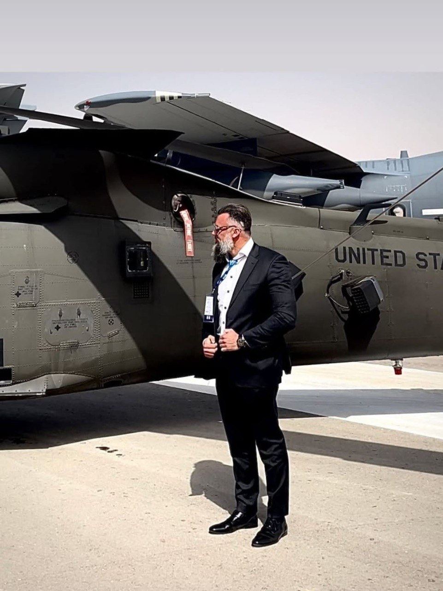
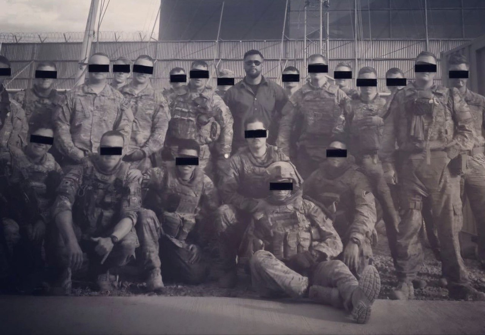
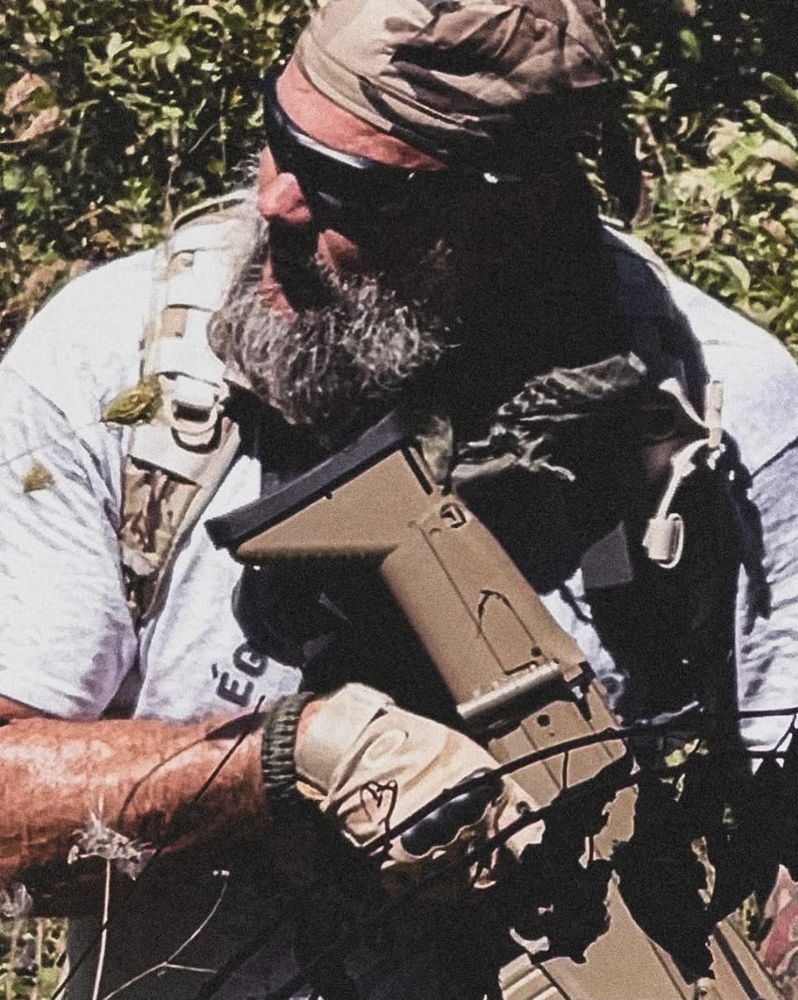
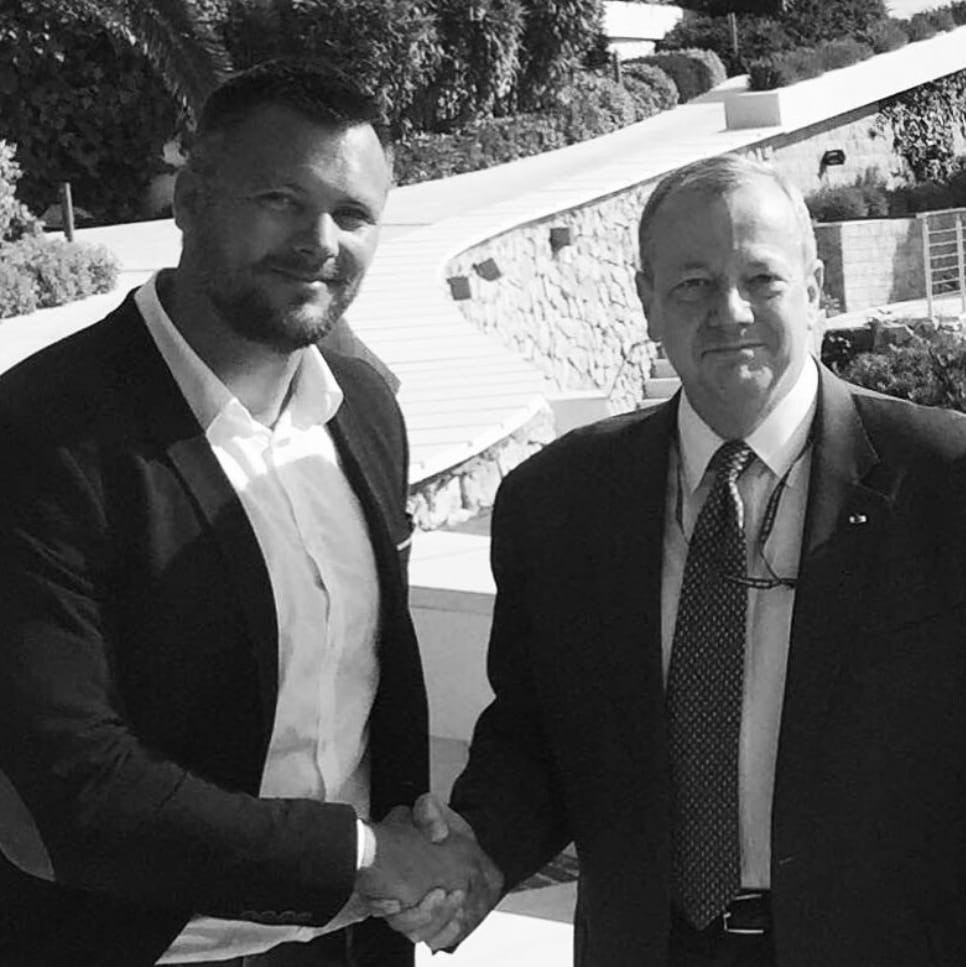

28+ years across Iraq, Afghanistan, Libya, South Sudan, Nigeria, and Ukraine. Board Member at the International Police Organization. Security strategist and trusted partner for complex global engagements.
Get In Touch →Admir Barčić has led and supported some of the most complex civilian evacuation (EVAC) and crisis response operations in recent history, operating across high-risk conflict zones in coordination with governments, international organizations, and private security networks.
With over 28 years of field experience, his work spans Afghanistan, Ukraine, the Middle East, and Africa, with a particular focus on high-threat extractions, humanitarian corridors, and strategic evacuation logistics.




During the collapse of Afghanistan in 2021, Admir Barčić played a key operational role in large-scale evacuation missions in cooperation with international partners, including humanitarian and non-governmental organizations such as Mercury One and the Nazarene Fund.
In one of the most recent high-risk operations, Admir Barčić was involved in the evacuation of over 900 Slovenian citizens from an active conflict zone in the Gulf region.
Admir Barčić has also participated in evacuation and crisis response operations related to the conflict in Ukraine, operating within multinational frameworks involving both governmental and private-sector coordination.
Specialist services for individuals, organisations, and governments requiring trusted operational support at short notice.
Safe and discreet repatriation of personnel from high-risk regions, conflict zones, and complex jurisdictions. End-to-end logistics managed.
Personal protection for executives, HNWIs, diplomats, and private clients. Domestic and international assignments. Short-notice availability.
Rapid extraction of personnel from deteriorating situations. Experience coordinating evacuations across the Gulf, Eastern Europe, and beyond.
Pre-travel and destination security assessments. Threat analysis, route planning, and contingency protocols for high-risk environments.
Secure escort and transfer services for individuals requiring safe passage across borders or through complex operational environments.
Ground-level coordination for complex multi-jurisdictional operations. Local networks, documentation, and liaising with authorities.
Admir Barcic is a globally experienced security professional and the Founder of Zeus Actual Intelligence & Security Agency, as well as Founder and Managing Director of Win-Win Solution — a consulting company specialising in business development, strategic advisory, security consulting, and international project development. He is International Business Development Manager at Evolution Global Risk Management, a Board Member of the International Police Organization (IPO HQ) and a certified PMC Instructor with deep operational roots.
War-experienced across Iraq, Afghanistan, Libya, South Sudan, Nigeria, and Ukraine — 28+ years as both operative and strategist. Former Co-Founder and Director of Shield Security Services, one of Afghanistan's leading private security companies. Previously Global Director at SECU in Riyadh, and 14+ years as Global Business Development Director at Stratex Group across Europe and the Gulf.
Based in Slovenia and Montenegro. Available internationally at short notice. All engagements handled with absolute discretion.
Read the full background →Recent coverage and updates involving Admir Barčić.
Vijesti reported that Admir Barčić rescued two boys, aged seven and ten, who were drowning around 40 metres off Slovenska Beach in Budva, Montenegro. As panic spread on the beach, he swam out, secured both boys and brought them safely back to shore. Both were treated and are out of danger.
Read on Vijesti →Admir Barčić supported the evacuation of more than 900 Slovenian citizens from an active conflict zone in the Gulf region — one of the fastest and most efficient evacuation responses in the region, officially recognised by Slovenian state authorities.
Answers to common questions about Admir Barčić's background, services and availability.
Admir Barčić (also written Admir Barcic) is a security and risk management director with 28+ years of field experience across Iraq, Afghanistan, Libya, South Sudan, Nigeria and Ukraine. He is the Founder of Zeus Actual Intelligence & Security Agency and the Founder and Managing Director of Win-Win Solution, a consulting company specialising in business development, strategic advisory, security consulting, and international project development. He is also International Business Development Manager at Evolution Global Risk Management, a former Co-Founder and Director of Shield Security Services, one of Afghanistan's leading private security companies, a Board Member of the International Police Organization (IPO HQ) and a certified PMC instructor. He is based in Slovenia and Montenegro and available internationally.
He provides personnel repatriation, close protection, crisis extraction, security and threat assessment, secure escort and transfer, and multi-jurisdictional logistics coordination for individuals, corporations, NGOs and governments operating in high-risk environments.
He is based in Slovenia and Montenegro and operates worldwide, with particular depth across the United Kingdom, the Gulf/GCC region, the Balkans, Eastern Europe, the Middle East and Africa. He is available internationally at short notice.
For urgent or time-sensitive requests, direct contact is preferred. All enquiries handled confidentially.